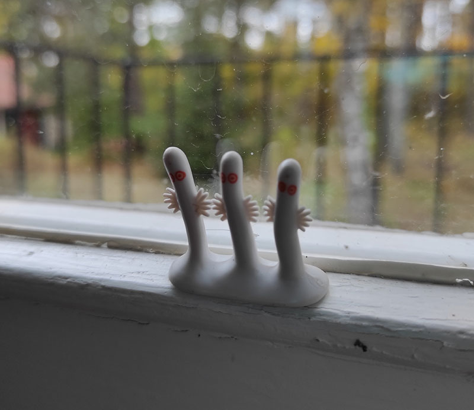
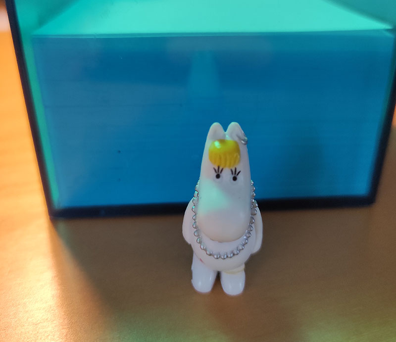

Vad ska man göra om någon inte har alla Mumintroll hemma?
Om någon du känner inte verkar har alla Mumintroll hemma i dalen får man se till att hitta felet.Det är inte jättelätt men det finns verktyg att ta hjälp av för att kunna identifiera problemen och ställa rätt diagnos.

Gå igenom följande checklista:

Om de svarar ja på den sista frågan är det ett säkert tecken på överdos av sylt.
Detta kan botas med sockeravgiftning i en vecka.
Andra svar kräver vård av en specialist inom Muminologi. Sök vård akut!